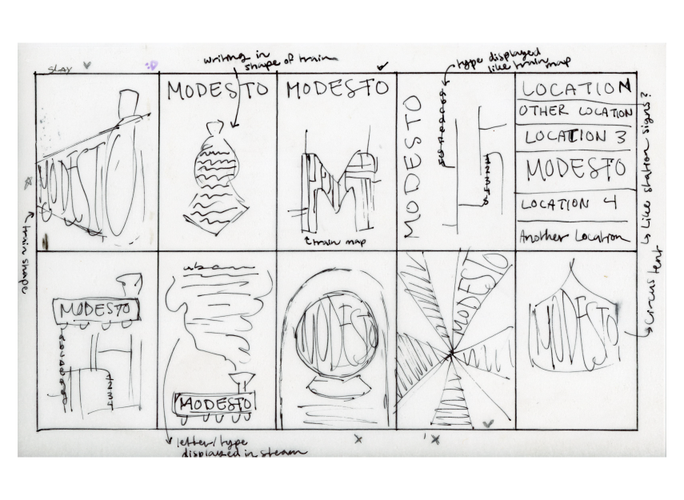
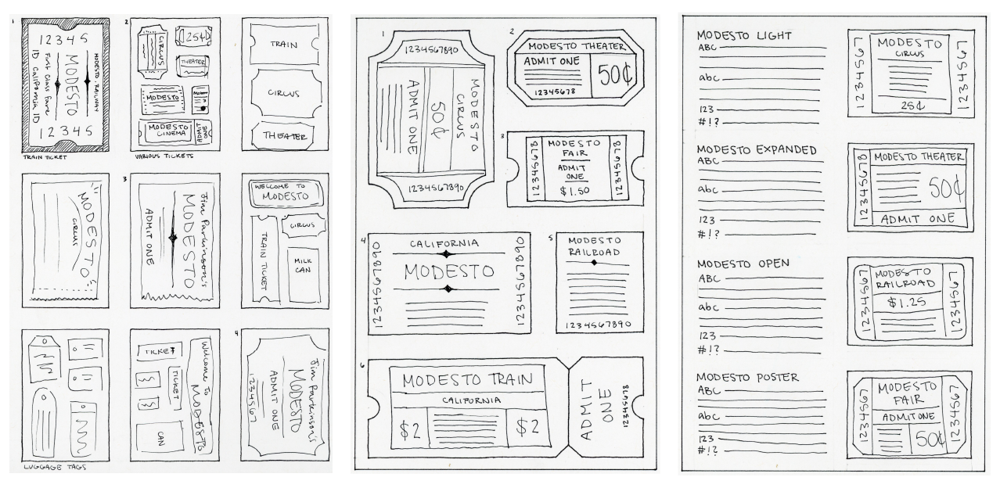

Peyton Wood
Modesto
Type Specimen Poster
This is a type specimen poster I created for the Modesto typeface. For this project, I drew inspiration from old train, circus, and movie tickets to create a unique and engaging design that showcases the font's versatility and vintage appeal.


My Process
I started with some general sketches of ways in which I could display the typeface. I wanted to make a callback to the train station that originally inspired the font, which I had discovered from my research. After multiple critique and review sessions with my peers, I was able to create my digital compositions seen above.

